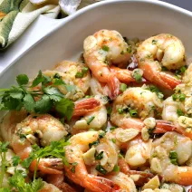
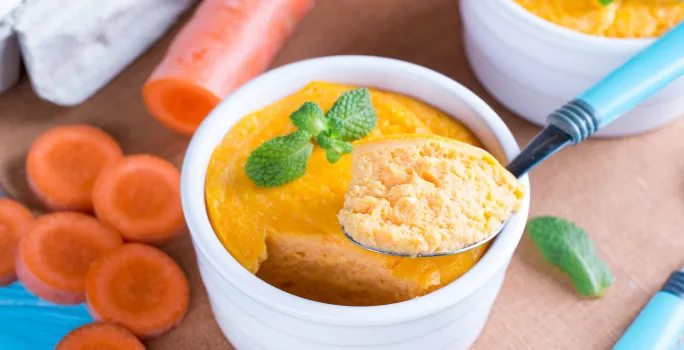

Recetas de cocina casera
Carlota de Limón
Camarones al Ajillo
Tacos de Carne Estilo Oriental
Budín de Verduras
Carlota de Limón
Ingredientes
(315 g.) 1 lata de Leche Evaporada IDEAL
(397 g.) 1 lata de Leche Condensada LA LECHERA
(113 g.) ½ barra o ½ taza de queso crema a temperatura ambiente
(122 ml.) ½ taza de jugo de limón fresco
Elaboracion
. Licuar la Leche Evaporada IDEAL®, la Leche Condensada LA LECHERA®, el queso crema y el jugo de limón.
En un molde cuadrado no tan alto (aprox. 9”x9” y 2” de alto), colocar una capa de galletas (aprox. 10 galletas), una capa de crema y distribuirla con una espátula. Repetir las capas, de tal forma que la ultima sea de crema
Cubrir la última capa con ralladura de limón y galletas maría trituradas. Cubrir la carlota con papel aluminio o cubierta plástica y refrigerar por al menos 6 horas
Servir y disfruta
Camarones al Ajillo
volver

Ingredientes
(680 g.) 1 ½ libra de camarones limpios
(10 g.) 1 sobre de Sazonador de Camarón MAGGI®
(30 g.) 2 cucharadas de mantequilla
(80 g.) 2/3 taza de ajo cortado finamente
Elaboracion
En un tazón, combinar los camarones con el Sazonador de Camarón MAGGI® y dejar sazonar por 5 minutos.
En un sartén a fuego medio, derretir la mantequilla y sofreír el ajo por 1 minuto.
Agregar los camarones y cocinar por 10 minutos. Añadir el perejil y cocinar 2 minutos más.
Servir y disfrutar.
Tacos de Carne Estilo Oriental
volver
Ingredientes
(454g.) 1 libra de pollo cortado en tiras
(50g.) ½ pimentón verde cortado en tiras
(100g.) 1 zanahorita cortada en tiras
1 sobre de Delicias de Pollo CHOP SUEY® (454g.) 1 libra de fideos de arroz Suficiente agua para cocinar 8 tortillas para tacos
Elaboracion
En un sartén a fuego medio, calentar el aceite y cocinar la carne con los vegetales durante 5 minutos o hasta que la carne esté sellada.
Verter el agua y el sobre de Delicias de Pollo CHOP SUEY®. Revolver y cocinar 15 minutos o hasta que la carne esté cocida y la salsa esté espesa.
Poner una cacerola a fuego alto y calentar el agua hasta que hierva. Cocinar los fideos por 2 minutos.
Calentar tortillas en un sartén a fuego alto. Cubrir las tortillas con la mezcla de fideos con carne y disfrutar.
Budín de Verduras
volver

Ingredientes
1 ½ Taza de agua
3 cucharadas de apio cortado en bastones
1 cucharada de hojas de cilantro
2 cucharadas de pimentón cortado finamente
Elaboracion
En una olla pequeña agregar el agua indicada y calentar hasta hervir, agrega inmediatamente el zapallo, zanahoria, apio y pimentón, ajo y dar cocción al menos unos 5 minutos a fuego medio. O bien hasta que el zapallo este blando.
Luego agrega las hojas de espinaca y el cilantro, mezclando con la ayuda de una cuchara de palo. Dar cocción a fuego medio durante 2 minutos. Una vez pasado el tiempo de cocción, retirar las verduras del agua y colocarlas en la jarra de la licuadora.
Agrega las medidas de NESTUM® Avena indicadas, el huevo y licúa todo el contenido hasta moler completamente. Rellena pequeños pocillos aptos para horno previamente aceitados y lleva a horno precalentado durante 10 minutos a 180°C. Hornea los budines durante 7 a 10 minutos o bien hasta cuajar. Retíralos del horno y déjalos enfriar unos minutos y sirve de inmediato.